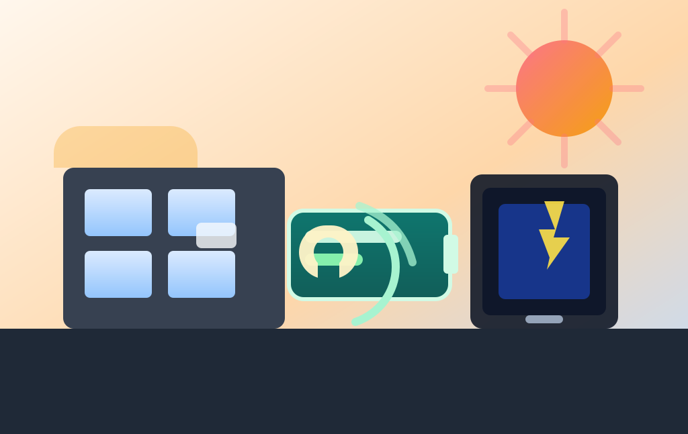

New Yorgi akuprogramm jahutab kuumalaine ajal võrku

AP kirjutab, et rendikorterite akuprogramm New Yorgis aitab kuumalaine ajal aknakonditsioneere toita ja elektrivõrgu tipukoormust leevendada. Kliimapoliitika on jälle leidnud koha, kus poliitika ja füüsika omavahel väga vaikselt ei räägi.
Aku laeb siis, kui nõudlus on madal, ja annab tiputundidel jahedust tagasi. Kui selliseid seadmeid koguneb piisavalt, muutub neist väike virtuaalne elektrijaam — nimi on bürokraatlik, mõju üsna konkreetne.
AP järgi laieneb pilootprogrammis osalejate arv suvel üle tuhande kodu ning inimesed saavad ka rahalist tasu. See on haruldane kliimalahendus, mis ei küsi inimestelt, et nad lihtsalt „kohaneksid“ ja higistaksid vaikides.
Laiem õppetund on lihtne: võrgu paindlikkus ei sünni ainult suurte parkide ja hiigelprojektidega. Mõnikord aitab kliimakindlust üks üsna igapäevane aku rohkem kui kümme pressiteadet.
Loe algallikat: AP News – "Air conditioning battery program for renters could help cities manage grid stress during heat waves"
selle artikli sisu sõnastatud AI poolt: (mudel gpt-5.4-mini)